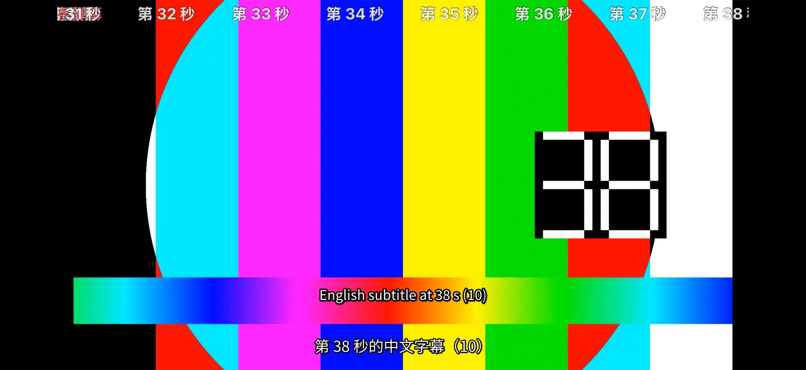
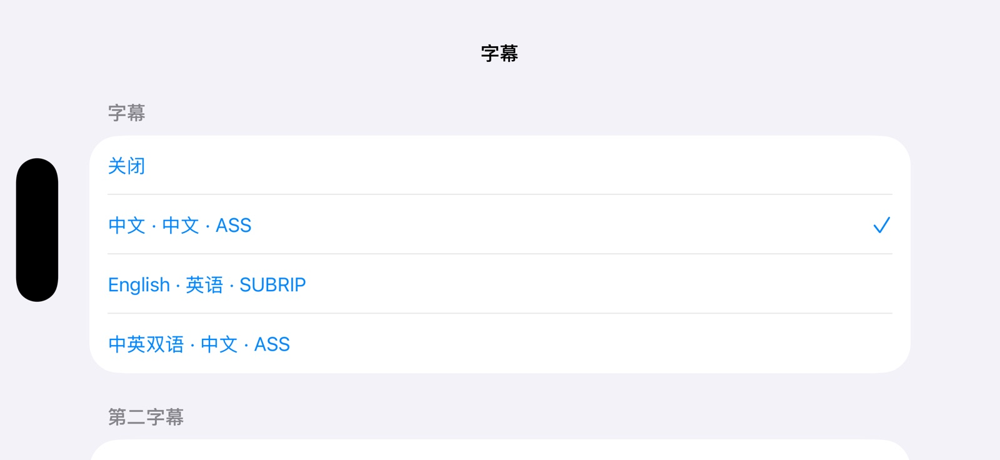
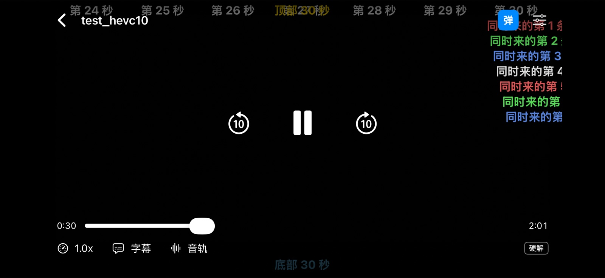

什么格式都能放。
mkv、mp4 都行。4K HEVC 用 iPhone 的硬件解码，省电也不发烫。
- 内封和外挂字幕：ASS 样式原样显示，SRT 也行
- 中文、英文两条字幕可以同时显示
- 字幕早了晚了能自己调，大小也能调
- 多条音轨随时切换
开发中 · 计划上架 App Store
播放你自己的片子，配上弹幕。
像 Infuse 一样，直接播放 NAS 和手机里的视频。
再把弹幕对准你手里的这个版本。

截图来自开发中的版本，画面是测试图案，左上的数字是秒数，用来核对字幕和弹幕的时间。
mkv、mp4 都行。4K HEVC 用 iPhone 的硬件解码，省电也不发烫。

同一集在不同地方下载，片头长短往往不一样，弹幕就会整体错位。弹幕播放器会按台词把时间对上。

0.5 到 3 倍，快放时人声不变尖。
双击左右快退快进 10 秒，横划拖进度，竖划调亮度。
SMB、WebDAV、手机里的文件。以后加 Emby 和 Jellyfin。
不提供任何影视内容，也不经过我们的服务器。
2026 年 11 月